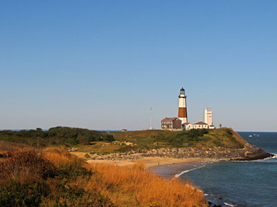
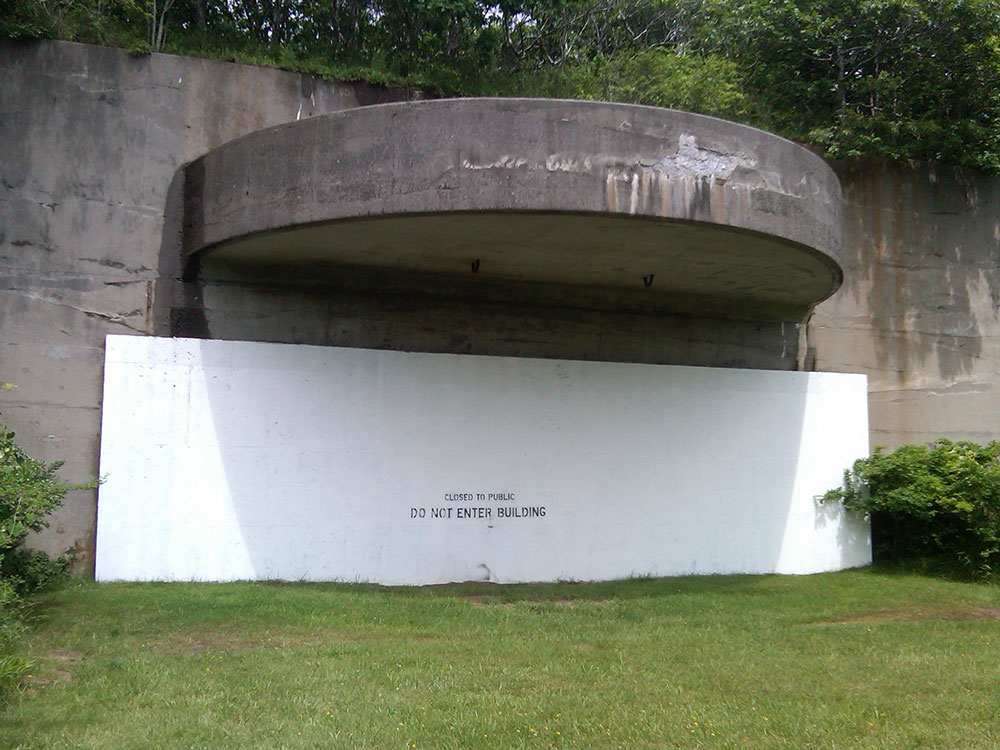
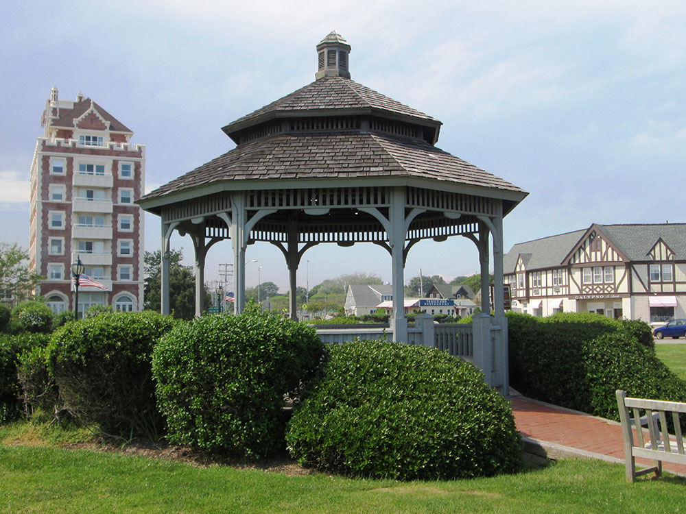
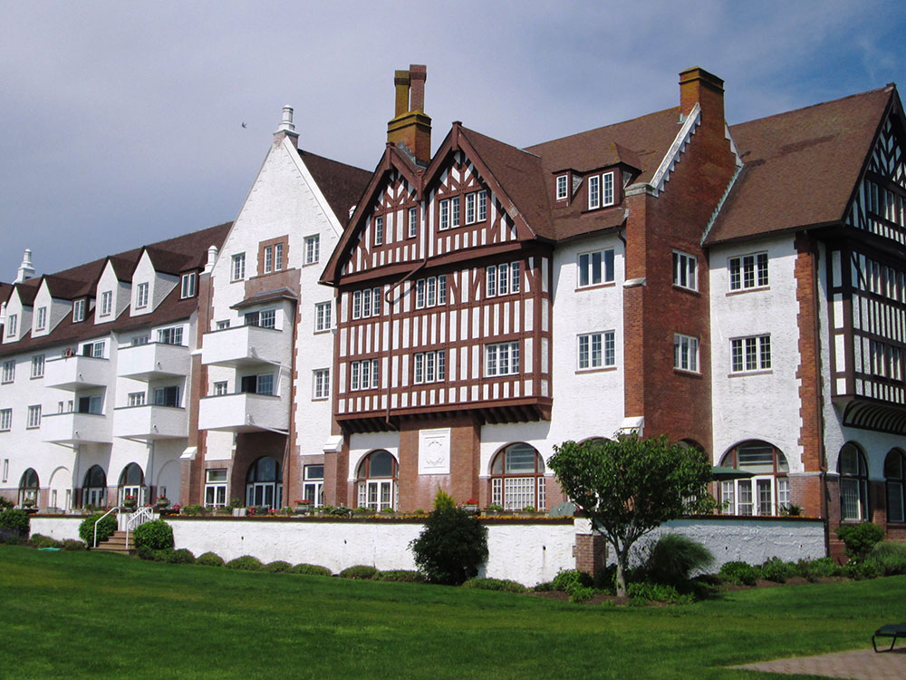
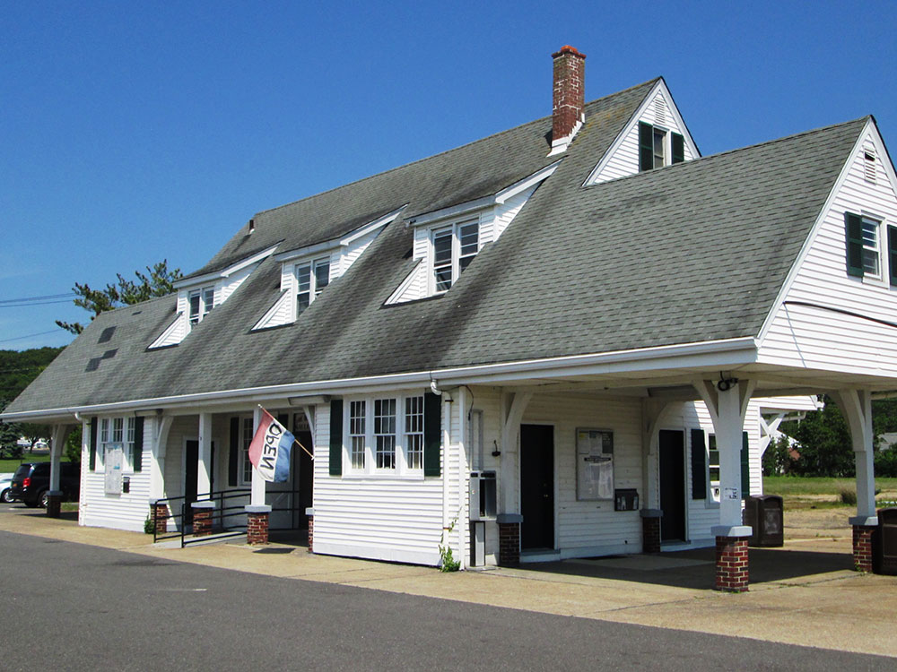
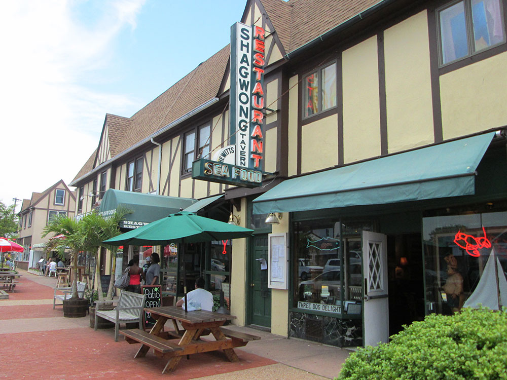
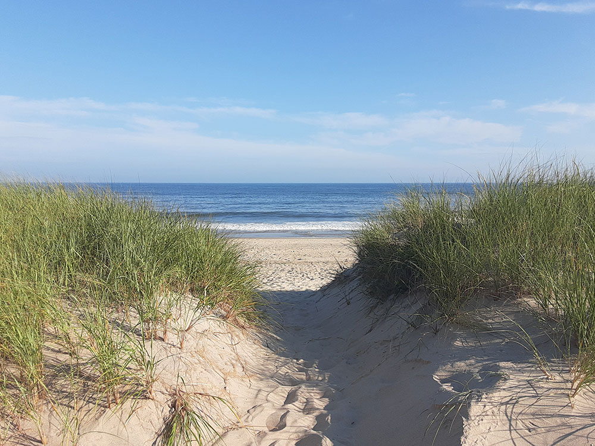
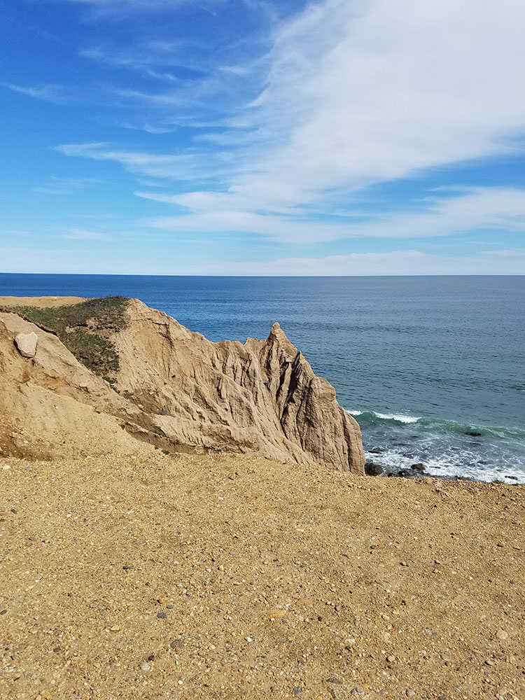

Hamlet on the eastern end of the South Shore of Long Island is a major tourist destination and has six state parks
General Information
Peak season: Memorial Day through Labor Day; many seasonal businesses close mid-fall
Accommodations and restaurants priced accordingly for a Hamptons resort destination
How to Get There
From New York City (approximately 118 miles, 2.5–3 hours): Take I-495 E (Long Island Expressway) east to Exit 70, then take NY-27 E (Sunrise Highway, then Montauk Highway) all the way east through Southampton, East Hampton, and Amagansett until you reach Montauk. By train: The Long Island Rail Road operates the Montauk Branch with direct service from Penn Station (NYC) — approximately 3–3.5 hours to Montauk station.
Overview
Montauk is a hamlet at the eastern tip of Long Island's South Fork, about 118 miles from Midtown Manhattan, which markets itself as "The End." It is famous for its lighthouse, surf beaches, state parks and sport fishing, and it is often called the "Fishing Capital of the World" for the number of saltwater fishing records caught here. It has a more casual, rugged feel than the glamorous villages of the Hamptons to the west.
People come to Montauk to climb the lighthouse, surf at Ditch Plains, go on fishing charters, hike the bluffs and wooded trails, ride horses at Deep Hollow Ranch and eat lobster rolls and seafood at the harbor. It has a lively summer season of restaurants, bars, B&Bs and hotels, and many places close from November to April.
History
The Montaukett Native Americans lived on this peninsula for centuries and gave it its name. Settlers from East Hampton used the grassy Montauk Peninsula as common pasture, and Deep Hollow Ranch, founded in 1658, claims to be the oldest cattle ranch in the United States. President George Washington commissioned the Montauk Point Lighthouse, completed in 1796, as one of the first public works projects of the new nation. In 1898, after the Spanish-American War, Theodore Roosevelt and his Rough Riders were quarantined at Camp Wikoff on Montauk Point. In the 1920s developer Carl Fisher tried to make Montauk the "Miami Beach of the North" and built Montauk Manor, and during World War II Camp Hero guarded the coast. Fishing and tourism have defined the hamlet since.
Sightseeing and Popular Landmarks
The Montauk Point Lighthouse, in Montauk Point State Park, is the main landmark, with a museum and a climb of 137 steps to the top. Camp Hero State Park has the remains of a WWII coastal defense battery and a Cold War radar tower, and has been linked to conspiracy tales of the "Montauk Project." Montauk Harbor is lined with fishing boats, seafood restaurants and whale-watching and charter trips. Montauk County Park, which includes Deep Hollow Ranch, offers horseback rides, and Ditch Plains is a famous surfing beach.
Culture and Museums
The lighthouse museum tells the story of Montauk's maritime history and the lighthouse keepers. The Montauk Historical Society, the Montauk Library and Camp Hero hold local history, and the state park sites offer guided tours. The hamlet is known for its relaxed art, music and surf culture, with live music and farmers markets, and its seafood restaurants serve fresh local fluke, tuna, striped bass and lobster.
Parks
Montauk has some of the best state parks on Long Island. Hither Hills State Park has a long beach, trails and a campground. Shadmoor State Park has high bluffs over the ocean, Camp Hero has wooded trails and ocean views, and Montauk Point State Park surrounds the lighthouse. Montauk Downs State Park has a golf course and tennis courts, and Montauk County Park includes beaches and the ranch.
Seasons and Weather
Montauk has a humid subtropical to humid continental climate, cooled by the ocean. Summers are pleasant, with highs in the 70s and low 80s °F, and the season runs from Memorial Day to Labor Day, when roads and parking are crowded. Fall is a good time for fishing and quiet beaches, winters are cold and windy, with highs in the 30s and 40s °F, and many restaurants and hotels close. Fog, strong surf and coastal storms can affect beaches and ferries.
This article uses material from the Wikipedia article "Montauk, New York", which is released under the Creative Commons Attribution-Share-Alike License 3.0. Additional information from the Montauk Chamber of Commerce, the Montauk Historical Society, the New York State Office of Parks, Recreation and Historic Preservation, National Weather Service New York and the official websites of the attractions mentioned.
Featured Locations

Tim Hettler from New York, NY, USA, CC BY 2.0, via Wikimedia Commons; Image Size Adjusted

Montauk Point Light
Lighthouse located adjacent to Montauk Point State Park, at the easternmost point of Long Island












